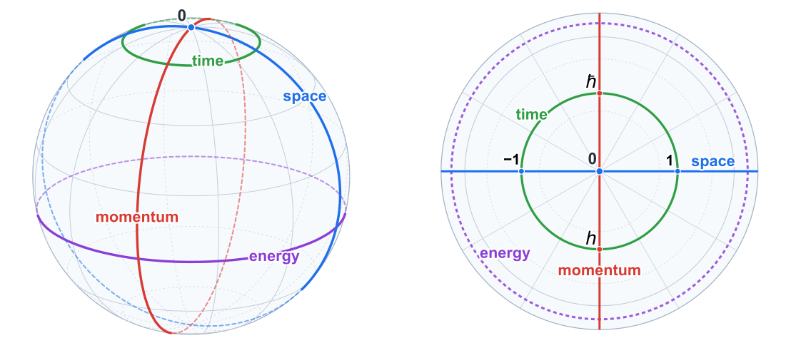

Every measurement ever taken, every proof ever written, and every computation ever run has been and ever will be finite. In fact the most accurate empirical measurement ever performed was a comparison of two optical clocks, resolved to 7.6 parts in 1021 — the gravitational redshift across one millimetre of a strontium lattice, read as a fractional frequency difference [1]. That is a count of 267: 67 bits. The longest count a computation has ever run coherently through is the verification of the Collatz conjecture for every starting value below 271 [2]: 71 bits. Nothing registered by an instrument or enumerated by a machine has ever exceeded a count of 271.
So what exactly makes us believe in the infinite? The answer lies in the way our minds learn to extrapolate, imagining continuums and limitless extensions beyond what we can directly measure, compute, or comprehend. The belief in the infinite is a cognitive projection, a mental construct that simplifies our reasoning about the world we actually inhabit. It is rooted in tradition, convention, and dogma, very much like the belief in the flat Earth, or the heliocentric cosmology once were. No empirical evidence has ever proven, nor can ever prove, even in principle, the existence of actual infinities.
This research programme presents and substantiates a simple core argument: our Universe is finite. It is very large, but comprehensible, self-contained and complete. Every observation is a part that can never exhaust the whole. The programme rebuilds mathematics, physics and cosmology over a finite arithmetic substrate, taking the holographic principle as its physical starting point. The framework keeps a public ledger of its formal claims, formalised proofs and, where a claim admits a finite check, attaches an executable witness. It makes the empirical validation, formulation of falsifiable predictions, and quantitative explanation of existing measurements into its core objective.
The holographic principle, taken literally
Physics has been quietly finite for a long time. When a physical calculation returns infinity, it is treated as evidence that the description has reached a limit, not as a measured physical quantity. The point-particle electron self-energy diverges; in quantum electrodynamics, divergences are handled by renormalisation. A Planck-scale cutoff makes the usual vacuum-energy estimate finite, but still about 120 orders of magnitude larger than the measured value. The framework catalogues these cases in Paradoxes of Infinity as Reductio ad Absurdum. Nature has never handed anyone an infinity.
The positive form of this came from black holes. In the 1970s Bekenstein and Hawking found that a black hole carries entropy, information content, proportional not to its volume but to the area of its horizon. In the 1990s 't Hooft and Susskind promoted the strangeness to a principle: the physics inside any region is fully written on that region's surface, like a three-dimensional scene stored in a two-dimensional hologram, and the surface can hold only finitely much, a fixed capacity per patch. Many approaches to quantum gravity accept this and treat it as a constraint that continuum theories must respect.
The argument for taking it literally is short. A black hole's surface keeps count of what its interior can hold, and the count grades with size: a bigger horizon holds more, a black hole the mass of the Sun can be in vastly more distinct states than one the mass of a mountain. And the count is not what the surface happens to hold but the most a surface of that size can register. Capacity, not inventory. Now suppose the writing on the surface were continuous, infinitely fine, like the real number line. Counting continuum points alone would not explain the graded capacity: there are exactly as many points in a millimetre as in a galaxy. The area law counts distinguishable states, not bare points. Extending the bound beyond black holes requires covariant and quantum versions with stated domains; it is not an unrestricted theorem that every material system has an absolute finite state count in ordinary quantum field theory. The framework's step from the bound to a finite encoding is stated, with its imported assumptions, in De Sitter Entropy Estimates over Finite Holographic Substrate.
Our own universe has a cosmological event horizon in the de Sitter account, not a horizon in the everyday visual sense. The dimming of distant supernovae reported in 1998 is evidence for accelerating expansion. If that acceleration is due to a positive cosmological constant, the asymptotic geometry has an observer-dependent event horizon with finite entropy; such a horizon does not require positive spatial curvature. Finite Ring Cosmology takes that de Sitter entropy as its quantitative import, as set out in the entropy manuscript. Finiteness is the framework's declared reading of the holographic count, not a conclusion established by the holographic principle alone.
That is the sense in which this programme presents a literal realisation of the holographic principle. It does not treat the principle as a bound imposed on a deeper continuum world; it takes the principle as the blueprint. The framework proposes a finite structure whose interior is the decoding of its boundary: the state of a universe is encoded on one closed surface, and what an observer inside it perceives, space, time and the sky, is the decoding of that surface from where the observer stands. The cardinality of the physical world is the one number the programme imports, read from the de Sitter entropy of our horizon. The manuscripts classify the remaining steps as premises, realisations, derivations, predictions or open claims.
The horizon
The visual horizon is where the opposite idea comes from. Stand in a field and look around. The ground runs flat to the horizon in every direction, and the natural thing to do is to extrapolate: flat, forever. Eratosthenes measured the curvature of the Earth twenty-two centuries ago, yet the local horizon still looks flat, because a very large thing and an infinite thing look the same from where you stand.
Infinity is that extrapolation, made official. Wherever a map of the world reaches its edge, the mind paints a horizon and names it "infinity": the line that goes on forever, the space with no edge, the process that always has one more step. It is not something anyone has observed. It is the shadow cast by the limits of a finite observer, a signpost at the edge of the map mistaken for a feature of the land.
This is not relativism. Reality itself is the one absolute; there is nothing outside it. What is finite and relational is our access to it: the measurements we take, the symbols we use, the maps we draw. A map is a fine thing. The mistake is to read the map's edge as the world's edge, and to fill the space beyond it with an infinity.
The one habit
Ask where infinity has ever shown up. Not in a telescope: the sky ends at a horizon. Not in a laboratory: no instrument has ever returned "infinite" as a reading. Not in a proof: a proof is a finite string of symbols, checked one step at a time by a finite person or a finite machine. Not even in your own head. You are a finite system running on a finite energy budget, and you have never once needed an actual infinity to think a thought, though you may have been told that you did.
Infinity is a habit, not a finding. It entered mathematics as a convenience (the limit, the real line, the completed set of all numbers) and it stayed because everything after it was built on top of it. The programme's first claim is that the habit fails three separate tests, each on its own.
It does not cohere. Naive set theory's unrestricted totality of all sets is inconsistent. Axiomatic set theory avoids that contradiction by restricting set formation; Zermelo–Fraenkel set theory has no universal set, and this is not a contradiction inside the standard theory. The framework reads the restriction as a reason to question completed totalities, not as a proof that standard set theory is inconsistent. Consider Hilbert's hotel: a number that stays the same when you add one to it. Every finite count you have ever made obeys the rule that adding one changes the total. Infinite cardinal arithmetic is defined differently and is consistent relative to its axioms; the framework's objection is that nothing physically registrable has that property. In the von Neumann encoding, the number one is the set containing the empty set. The framework reads that construction as a metaphysical starting position, an interpretation developed in its reductio paper, rather than as a contradiction in set theory.
It cannot be checked. Any evidence a bounded observer could hold, an observation, a dataset, a proof, fits inside a sufficiently large finite structure. So no finite body of evidence, however big, says "infinite". The only thing such evidence can say is "larger than my present bound". Physical registration uses finite resources, and any actual observer has finite resources, so the number of distinctions that observer can register is finite. No bounded observer can receive infinity as a completed datum. The formal scope of this bounded-agent argument is stated in The Undeclared Posit of Potential Infinity.
It is not needed. The framework's case is narrower than removing one axiom and making every paradox disappear. Hilbert's hotel depends on a completed infinite cardinal; Banach–Tarski depends on a choice principle; Russell's paradox instead concerns unrestricted set formation and does not require the axiom of infinity. The reductio paper treats these classes separately. Its constructive claim is that the finite procedures used in calculation can be retained without treating a completed infinite object as physical, a claim that must be established case by case.
Laws require limits
There is a fourth test, and it is the one physics cannot afford to fail. Douglas Adams imagined an Infinite Improbability Drive: a machine that works by letting any event, however absurd, happen somewhere, provided the universe is large enough. It is a joke, and it points to a real typicality problem. In a countably infinite sequence of independent trials, an event with fixed non-zero probability occurs infinitely often with probability one under the standard product measure, and arbitrarily long finite runs occur almost surely. An observer located inside such a run can receive a strongly unrepresentative record. This conclusion depends on the ensemble, independence and measure assumptions; it does not follow from the word "infinite" alone.
In a finite world, information and deviations are bounded, but finitude alone does not make a law structurally necessary. The programme's stronger claim is that its laws arise from the symmetries and counting rules of its finite substrate. Super-resolution imaging, learning systems and inference from finite samples rely on structural assumptions or priors; they do not by themselves establish that the universe is finite. The framework treats the possibility of stable inference as motivation for bounded registration, with the formal argument given in the potential-infinity manuscript.
Complete, therefore finite
Two older ideas say what kind of finite structure it has to be. Spinoza defined a thing as finite when it can be limited by another thing of the same nature, and called reality "infinite" because no such outside peer exists. The programme reads this as completeness: a system closed under its own operations, which nothing of its kind can enlarge. Reality has no outside; in the framework's vocabulary, it is finite but complete. Two and a half centuries later Noether showed that the conservation laws of physics are not commands handed down from outside a system but consequences of its own symmetries. Energy is conserved because the laws do not change with time; momentum, because they do not change with place. Explanation moved inside. There is no external lawgiver, and there is no external registry from which the universe could be enumerated or foreseen.
The programme takes these two ideas as motivation and states its operative premises in the framework manuscripts. The universe exists; any attempt to deny it is itself something that exists. The totality is finite and complete: finite for the reasons above, complete because it has no outside (two totalities would just be parts of one), so there is nothing it could be incomplete with respect to. Every reading of it is a projection: you are a part of the whole, and a part cannot hold a complete description of the whole, so every description, measurement and experience is a projection onto something smaller than the totality. The framework's finite treatment of Gödel's limits places the boundary at what a bounded observer can resolve; the argument and its conditions are given in the reductio paper. And a structure that works is the thing itself: when a mathematical structure is expressive enough, predicts what is observed, and leaves no registered distinction unaccounted for, it is not a model standing at a distance from reality. It is the reality, because nothing reaches an unregistered reality behind it. Physical identifications are recorded as realisations, with their status and falsifiers, rather than counted as mathematical derivations.
The finite world
What arithmetic does the programme assign to a complete finite totality? It adds the requirement of no proper closed sub-structure and selects clock arithmetic of prime cardinality. In arithmetic modulo a prime, every nonzero element has a multiplicative inverse, so division by every nonzero element is defined; finite fields more generally may have prime-power cardinality. Picture a clock face with a prime number of positions. Counting wraps around: you can keep counting forever, the way you can keep walking on the surface of the Earth, and the surface under you stays finite. The clock has two faces. On one, each move shifts you one position over; the framework identifies that action with space. On the other, each move scales the nonzero elements while zero stays fixed; the framework identifies that action with time. The associated Fourier-dual readings are momentum and energy. These physical identifications, and the algebra supporting them, are stated in Relativistic Algebra over Finite Ring Continuum and the entropy manuscript. The observer is inside the world it observes, with a horizon set by its own size.

The figure is the clock face drawn out. One prime field, read from the observer at the pole, has exactly four domains, and they come in two Fourier pairs: shifting along the space meridian is dual to shifting along momentum, and the drive that advances time is dual to energy. The horizon is the far pole; the equator is halfway to it. Nothing about this is a continuum approximation: the sphere has a prime number of positions along every great circle, and five marked residues appear on it, the origin 0 and the four nonzero residues ±1, ħ, h. These are finite-field labels in the figure, not constants read directly from an instrument. Since Ω = 4S + 1, the nonzero cycle has 4S steps and a quarter-turn has S. The programme identifies this quarter count with the de Sitter entropy and reads its spatial and temporal faces as area and age; the identification and its status are stated in the entropy manuscript.
The real numbers do not disappear. They become a chart: a map drawn on the finite territory, in which classical results are read but never done. Everything exact lives in the finite arithmetic; the continuum is how a bounded observer summarises what it cannot resolve, the way a flat map serves a walker on a round Earth. A map is not a defect of the ground.
None of this makes the world small or static. A complete system with no outside cannot be foreseen from outside, because there is no outside to foresee it from; structures form, interact and recombine, complexity grows, knowledge accumulates. A finite universe can be genuinely creative, and that is also what its freedom consists in: not exemption from cause, but the absence of any external vantage point from which it could be predicted.
What it buys
The test of a foundation is what it derives that others assume. The gravity manuscript derives Newton's law after three declared physical realisations. The dark-sector manuscript applies an amplitude reading below an acceleration floor to galaxy rotation curves, without a dark-matter particle, and states the fitted inputs and observational comparisons. The quantum manuscript constructs the complex amplitude and probability rules on the finite substrate. The fields manuscript develops the gauge interactions, one generation of matter and an account of the generation count. These claims do not all have the same status; the manuscripts and ledger distinguish imported inputs, realisations, derivations, predictions and open claims.
And the smallest such world can be run. The minimal-instance manuscript identifies an observer of 13 cells inside a totality of 233 as the least pair allowed by its stated selection rules; the construction realises space, time, light, mass, gravity and a sky, and it runs in a tab of your browser. The laboratory page shows it, and the essay A universe in a tab of your browser walks through it without equations.
The literature it stands on
The programme is built from older ideas; its synthesis and its physical identifications are its own. The record of where the ingredients come from is the honest map of the neighbourhood, and of where the programme parts company with it.
Black holes and the holographic principle. Bekenstein assigned a black hole an entropy proportional to the area of its horizon [3], Hawking's radiation fixed the coefficient and made the horizon a thermodynamic object [4], and Bekenstein's bound turned the observation into a limit on how much information a bounded weakly gravitating system can hold [5]. 't Hooft [6] and Susskind [7] raised the limit to a principle, that the physics of a region is fully described by degrees of freedom on its boundary, with black-hole entropy equal to one natural unit per four Planck areas; Bousso made the bound covariant [8] and reviewed the whole development [9]. Maldacena's correspondence supplied the best-developed realisation, conjecturing an equivalence between a gravitational theory in an anti-de Sitter interior and a field theory on its boundary [10]; Ryu and Takayanagi read the boundary's entanglement entropy off the area of an interior surface [11], and Van Raamsdonk argued that the interior's connectedness is that entanglement [12]. These constructions retain continuum descriptions and are developed in asymptotically anti-de Sitter settings, rather than the observed positive-cosmological-constant setting. The programme's distinct move is to drop the continuum underneath the count: the boundary count is the whole state, and the interior is its decoding, as stated in the entropy manuscript.
The de Sitter horizon and a finite state space. Gibbons and Hawking showed that the cosmological horizon of a de Sitter universe carries an entropy and a temperature of its own [13]. Banks argued for a finite-dimensional Hilbert space in asymptotically de Sitter quantum gravity [14], while Bousso formulated the related N-bound on observable entropy for positive vacuum energy [15]; Fischler and Susskind asked what holography means for cosmology at all [16]. The programme's single quantitative import, the cardinality 4S + 1 with S the de Sitter entropy, is its own reading of these bounds as the definition of the world rather than as a constraint on it, and is stated as such in the framework manuscript.
Gravity as thermodynamics and as information. Jacobson derived Einstein's equation from the area law and the Clausius relation applied to local horizons [17]; Padmanabhan developed the thermodynamic reading of gravity at length [18]; Verlinde proposed gravity as an entropic force and, later, that the dark-matter phenomenology of galaxies is an entropic effect of the de Sitter horizon [19], [20]. On the observational side, Milgrom's acceleration scale [21] and the radial acceleration relation of McGaugh, Lelli and Schombert [22] are the facts any such account must reproduce, and Lineweaver and Patel's mass–radius chart of every kind of object between the Compton and Schwarzschild walls is the object-level frame the programme's metrology paper adopts [23]. The programme's derivation runs the other way from Verlinde's: the counting law comes first, Newton's law is its flux reading, and the acceleration scale is the horizon's drive rate, with no entropic postulate.
It from bit and the physics of information. Wheeler's "it from bit" is the programme's motto stated by someone else: every physical quantity derives its meaning from yes-or-no registrations by an observer-participator [24]. Landauer had already shown that erasing a bit costs energy, so that information is a physical quantity and not a bookkeeping device [25], [26]; Zeilinger proposed that an elementary system carries exactly one bit [27]; Lloyd computed the ultimate limits on computation set by energy and gravity and the total number of operations the universe can have performed [28], [29]. The digital tradition, from Zuse's computing space [30] through Feynman's simulation argument [31], Fredkin's digital philosophy [32], Wolfram's cellular automata [33] and 't Hooft's cellular-automaton interpretation of quantum mechanics [34], takes the world to be a discrete computation. The programme agrees that registration is finite and physical, and differs on the arithmetic: not bits on a lattice with an external clock, but one prime field whose observers carry their own clocks, and whose quantum mechanics is exact rather than emergent.
Discrete spacetime. Penrose's spin networks built space from combinatorial angular momentum [35]; the causal-set programme of Bombelli, Lee, Meyer and Sorkin takes spacetime to be a locally finite partial order [36], [37]; causal dynamical triangulations recover a four-dimensional world from a sum over discrete geometries [38]; Bialynicki-Birula wrote the Weyl, Dirac and Maxwell equations as unitary automata on a lattice [39]; Cortês and Smolin, and Unger and Smolin, argued for a universe of unique events in which time is real and the laws themselves are within it [40], [41]. These programmes use discreteness in different ways; many retain unbounded structures or recover a continuum limit. The programme's discreteness is of a different kind: a complete finite totality with no limit to take.
Quantum theory over finite fields. Wootters formulated finite-state quantum mechanics with a Wigner function on a finite phase space [42], and with Gibbons and Hoffman built that phase space on finite fields [43]; Vourdas reviewed quantum systems with a finite Hilbert space and their Galois-field structure [44]; Schumacher and Westmoreland's modal quantum theory [45] and the Galois-field quantum mechanics of Chang, Lewis, Minic and Takeuchi [46] replaced the complex amplitudes by finite-field ones and asked what survives; Lev proposed finite mathematics as the foundation of quantum theory outright [47], [48]; Carroll discretised quantum mechanics completely and finitely [49]. Spekkens's toy theory showed how much of quantum phenomenology follows from a restriction on what an observer can know [50], and Rovelli's relational quantum mechanics made every state a state relative to another system [51]. These are the programme's nearest neighbours. Many finite-field theories are studied as toy models or finite systems; Lev treats finite mathematics as foundational, and Carroll studies a completely discretised finite theory. Here the prime field is the proposed physical substrate, the complex structure is constructed from its quarter-turn congruence, and the observer is a subsystem rather than an external user; the technical claim is made in the quantum manuscript.
Finitism in mathematics. Yessenin-Volpin's ultra-intuitionism refused the completed infinite and the unbounded iteration of the successor [52]; Zeilberger argued that real analysis is a degenerate case of discrete analysis [53]; Gisin argued that the mathematical language chosen for physics, real numbers with infinite information or intuitionistic numbers with finite, shapes what physics can say about time [54]. The programme's first paper develops the reductio these authors point toward under an explicit determinacy condition; it treats the paradox classes separately and argues case by case for the finite procedures retained in the manuscript.
References
- T. Bothwell, C. J. Kennedy, A. Aeppli, D. Kedar, J. M. Robinson, E. Oelker, A. Staron and J. Ye, Resolving the gravitational redshift across a millimetre-scale atomic sample, Nature 602, 420 (2022).
- D. Bařina, Improved verification limit for the convergence of the Collatz conjecture, J. Supercomput. 81, 810 (2025).
- J. D. Bekenstein, Black holes and entropy, Phys. Rev. D 7, 2333 (1973).
- S. W. Hawking, Particle creation by black holes, Commun. Math. Phys. 43, 199 (1975).
- J. D. Bekenstein, Universal upper bound on the entropy-to-energy ratio for bounded systems, Phys. Rev. D 23, 287 (1981).
- G. 't Hooft, Dimensional reduction in quantum gravity, in Salamfestschrift (1993), arXiv:gr-qc/9310026.
- L. Susskind, The world as a hologram, J. Math. Phys. 36, 6377 (1995).
- R. Bousso, A covariant entropy conjecture, J. High Energy Phys. 1999(07), 004.
- R. Bousso, The holographic principle, Rev. Mod. Phys. 74, 825 (2002).
- J. Maldacena, The large N limit of superconformal field theories and supergravity, Adv. Theor. Math. Phys. 2, 231 (1998).
- S. Ryu and T. Takayanagi, Holographic derivation of entanglement entropy from AdS/CFT, Phys. Rev. Lett. 96, 181602 (2006).
- M. Van Raamsdonk, Building up spacetime with quantum entanglement, Gen. Relativ. Gravit. 42, 2323 (2010).
- G. W. Gibbons and S. W. Hawking, Cosmological event horizons, thermodynamics, and particle creation, Phys. Rev. D 15, 2738 (1977).
- T. Banks, Cosmological breaking of supersymmetry?, Int. J. Mod. Phys. A 16, 910 (2001).
- R. Bousso, Positive vacuum energy and the N-bound, J. High Energy Phys. 2000(11), 038.
- W. Fischler and L. Susskind, Holography and cosmology, arXiv:hep-th/9806039 (1998).
- T. Jacobson, Thermodynamics of spacetime: the Einstein equation of state, Phys. Rev. Lett. 75, 1260 (1995).
- T. Padmanabhan, Thermodynamical aspects of gravity: new insights, Rep. Prog. Phys. 73, 046901 (2010).
- E. Verlinde, On the origin of gravity and the laws of Newton, J. High Energy Phys. 2011(04), 029.
- E. Verlinde, Emergent gravity and the dark universe, SciPost Phys. 2, 016 (2017).
- M. Milgrom, A modification of the Newtonian dynamics as a possible alternative to the hidden mass hypothesis, Astrophys. J. 270, 365 (1983).
- S. S. McGaugh, F. Lelli and J. M. Schombert, Radial acceleration relation in rotationally supported galaxies, Phys. Rev. Lett. 117, 201101 (2016).
- C. H. Lineweaver and V. M. Patel, All objects and some questions, Am. J. Phys. 91, 819 (2023).
- J. A. Wheeler, Information, physics, quantum: the search for links, in W. H. Zurek (ed.), Complexity, Entropy, and the Physics of Information, Addison-Wesley (1990).
- R. Landauer, Irreversibility and heat generation in the computing process, IBM J. Res. Dev. 5, 183 (1961).
- R. Landauer, Information is physical, Physics Today 44(5), 23 (1991).
- A. Zeilinger, A foundational principle for quantum mechanics, Found. Phys. 29, 631 (1999).
- S. Lloyd, Ultimate physical limits to computation, Nature 406, 1047 (2000).
- S. Lloyd, Computational capacity of the universe, Phys. Rev. Lett. 88, 237901 (2002).
- K. Zuse, Rechnender Raum, Vieweg, Braunschweig (1969); English translation Calculating Space, MIT Technical Translation AZT-70-164-GEMIT (1970).
- R. P. Feynman, Simulating physics with computers, Int. J. Theor. Phys. 21, 467 (1982).
- E. Fredkin, An introduction to digital philosophy, Int. J. Theor. Phys. 42, 189 (2003).
- S. Wolfram, A New Kind of Science, Wolfram Media (2002).
- G. 't Hooft, The Cellular Automaton Interpretation of Quantum Mechanics, Springer (2016).
- R. Penrose, Angular momentum: an approach to combinatorial space-time, in T. Bastin (ed.), Quantum Theory and Beyond, Cambridge University Press (1971).
- L. Bombelli, J. Lee, D. Meyer and R. D. Sorkin, Space-time as a causal set, Phys. Rev. Lett. 59, 521 (1987).
- S. Surya, The causal set approach to quantum gravity, Living Rev. Relativ. 22, 5 (2019).
- J. Ambjørn, J. Jurkiewicz and R. Loll, Emergence of a 4D world from causal quantum gravity, Phys. Rev. Lett. 93, 131301 (2004).
- I. Bialynicki-Birula, Weyl, Dirac, and Maxwell equations on a lattice as unitary cellular automata, Phys. Rev. D 49, 6920 (1994).
- M. Cortês and L. Smolin, The universe as a process of unique events, Phys. Rev. D 90, 084007 (2014).
- R. M. Unger and L. Smolin, The Singular Universe and the Reality of Time, Cambridge University Press (2014).
- W. K. Wootters, A Wigner-function formulation of finite-state quantum mechanics, Ann. Phys. 176, 1 (1987).
- K. S. Gibbons, M. J. Hoffman and W. K. Wootters, Discrete phase space based on finite fields, Phys. Rev. A 70, 062101 (2004).
- A. Vourdas, Quantum systems with finite Hilbert space: Galois fields in quantum mechanics, J. Phys. A 40, R285 (2007).
- B. Schumacher and M. D. Westmoreland, Modal quantum theory, Found. Phys. 42, 918 (2012).
- L. N. Chang, Z. Lewis, D. Minic and T. Takeuchi, Galois field quantum mechanics, Mod. Phys. Lett. B 27, 1350064 (2013).
- F. M. Lev, Introduction to a quantum theory over a Galois field, Symmetry 2, 1810 (2010).
- F. M. Lev, Finite Mathematics as the Foundation of Classical Mathematics and Quantum Theory, Springer (2020).
- S. M. Carroll, Completely discretized, finite quantum mechanics, Found. Phys. 53, 90 (2023).
- R. W. Spekkens, Evidence for the epistemic view of quantum states: a toy theory, Phys. Rev. A 75, 032110 (2007).
- C. Rovelli, Relational quantum mechanics, Int. J. Theor. Phys. 35, 1637 (1996).
- A. S. Yessenin-Volpin, The ultra-intuitionistic criticism and the antitraditional program for foundations of mathematics, in Intuitionism and Proof Theory, Studies in Logic 60, North-Holland (1970).
- D. Zeilberger, "Real" analysis is a degenerate case of discrete analysis, in B. Aulbach, S. Elaydi and G. Ladas (eds), New Progress in Difference Equations (Proceedings of ICDEA 2001), Taylor & Francis (2004).
- N. Gisin, Mathematical languages shape our understanding of time in physics, Nature Physics 16, 114 (2020).
How this site is organised
The Ledger is the programme's public register of formal claims. A row may carry a status tag: imported from established results, realised as a physical identification, derived within the programme, a prediction with its falsifier, open, or Ω-hard, a value that no bounded observer can read, marked as such rather than guessed. Framework papers with public ledgers use the same status format, and where a claim admits a finite check, the row names the script that performs it. The corresponding scripts are collected in validation packages that run in the browser, so a reader can re-execute those checks without installing anything. The Publications tab lists the papers, the preprints and the essays, each linked to its ledger and its package where available. The Predictions tab collects the falsifiable predictions registered across the corpus, with their falsifiers, witnesses and source papers; the Explicability tab collects what the construction explains that the standard account postulates or fits, the explicability dividends, in the same form.
Where to start
The essays are the gentlest way in: From Absolute Infinity to Relational Finitude on the long retreat of the infinite from cosmology, physics and society; Zero to One on the creation story hidden inside the definition of the number one; The Pursuit of Completeness on Spinoza, Noether and the finite universe. For the argument in full, Existence, Complexity and Truth in a Finite Universe, and for the paradoxes of infinity treated as a single reductio, Paradoxes of Infinity as Reductio ad Absurdum. For the smallest world, the (13, 233) laboratory. For the physics, the ledgers of gravitation as phase synchronisation and the dark sector. Then go look.